Brzozamjenjivi ulošci filtera za vodu · CTO
- Vrsta sistema
- Brzozamjenjivi ulošci filtera za vodu
- Tehnički podaci
- CTO
- Proizvodi
- CTO / PCO — tehnički vodič za izbor
Bayonet-Lock · Brzozamjenjivi ulošci filtera za vodu. Prije zahtjeva za ponudu potvrdite priključak i zahtjeve projekta.
Prije zahtjeva za ponudu potvrdite priključak i zahtjeve projekta.
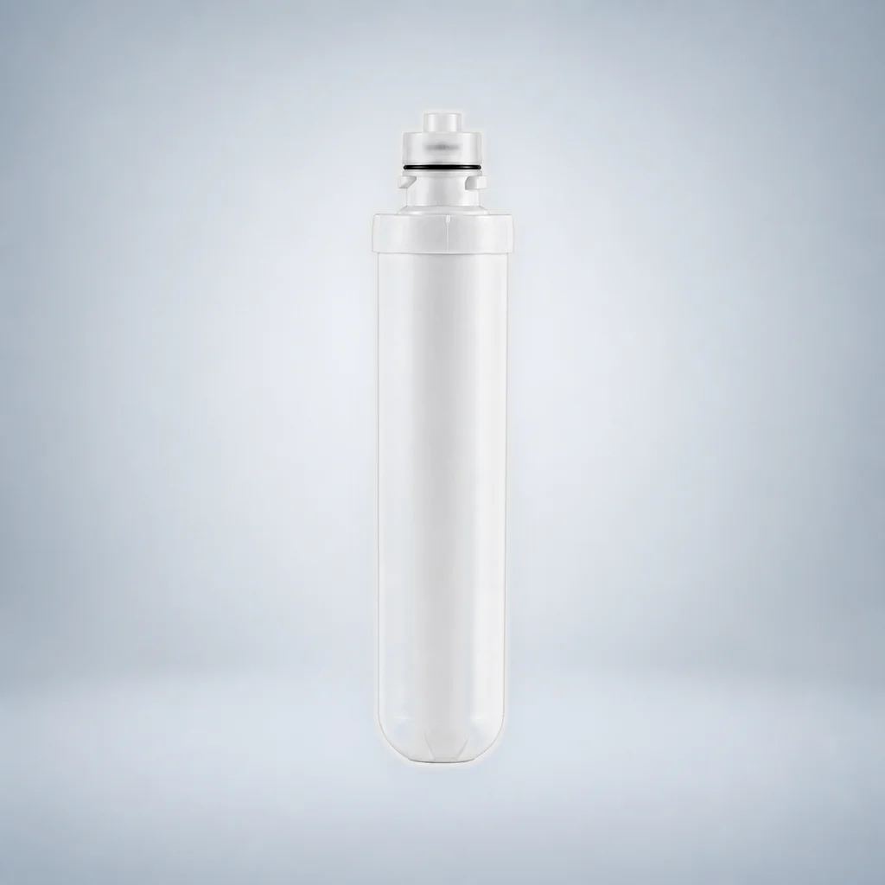

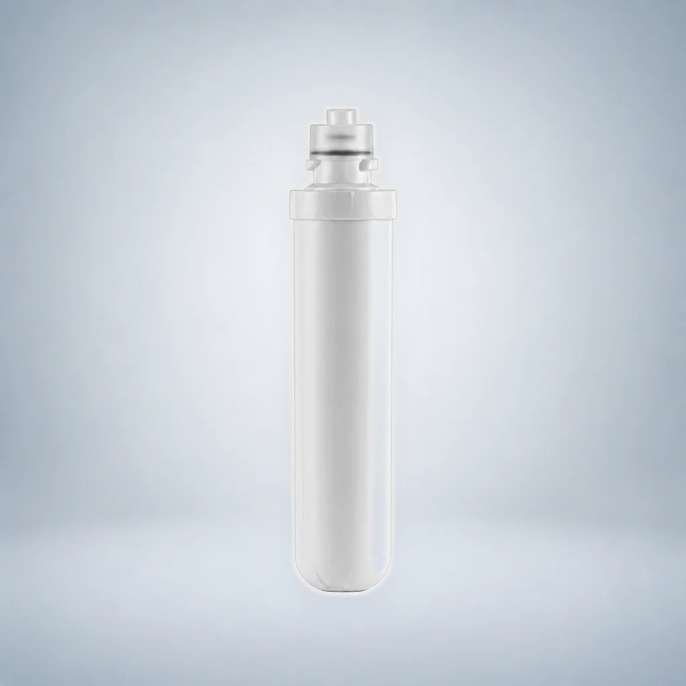

Prije zahtjeva za ponudu potvrdite priključak i zahtjeve projekta.

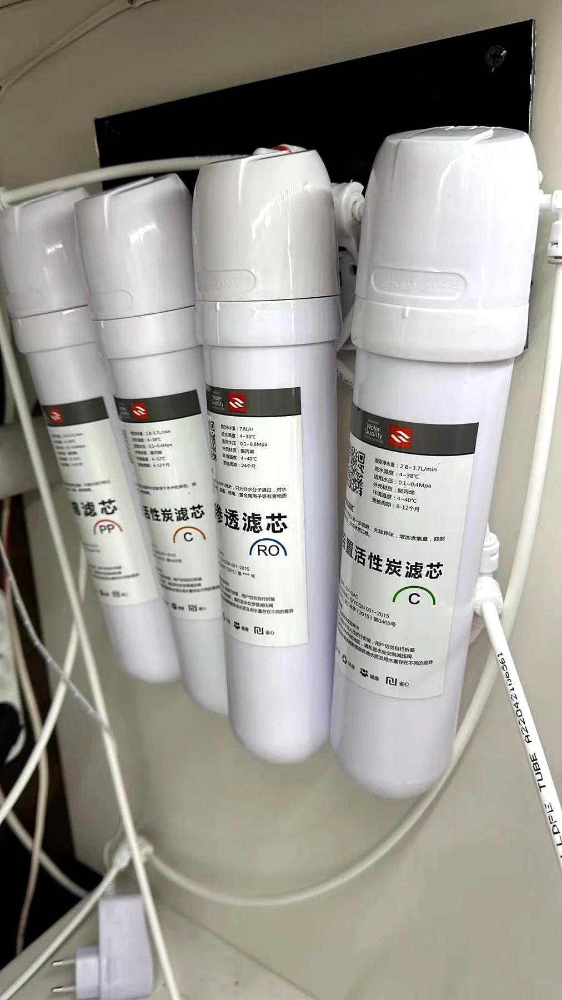
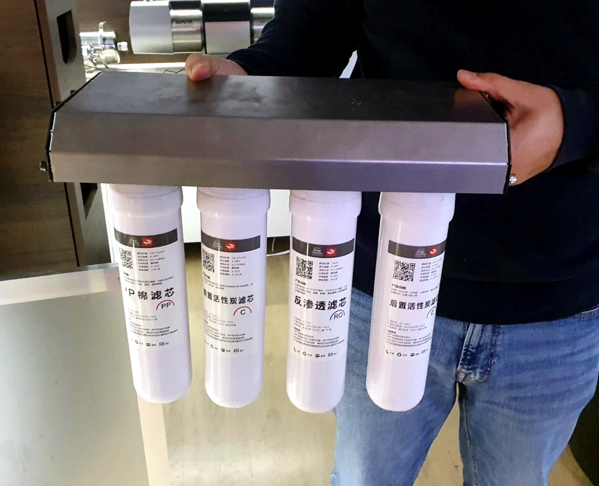
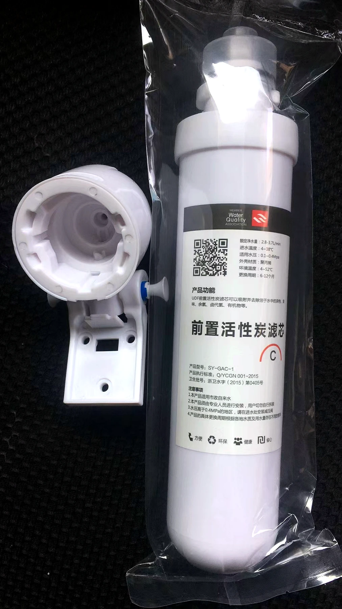
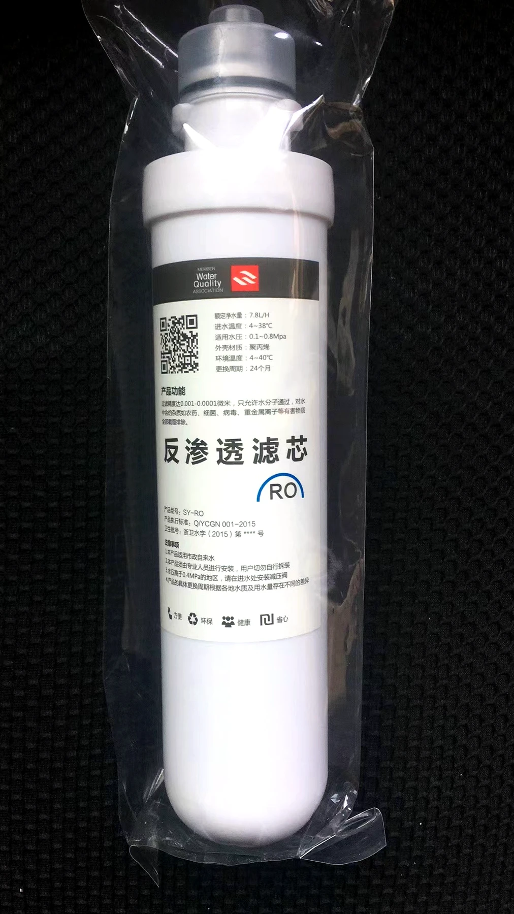
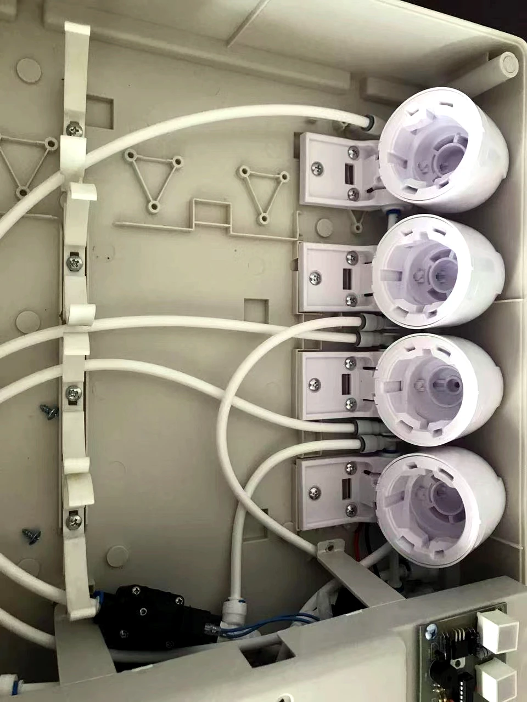
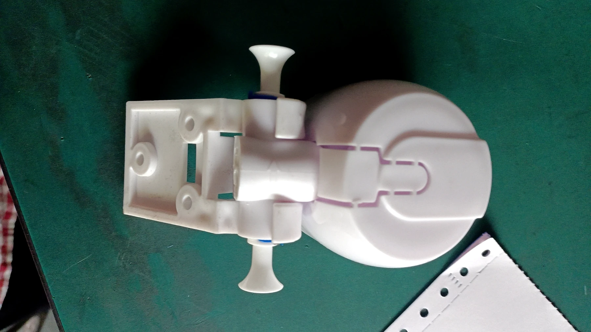
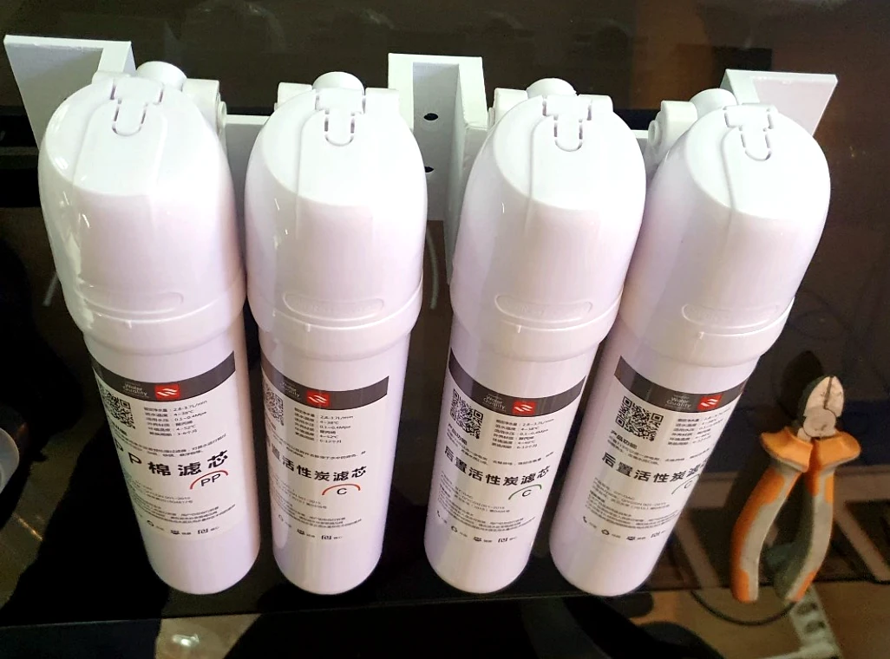
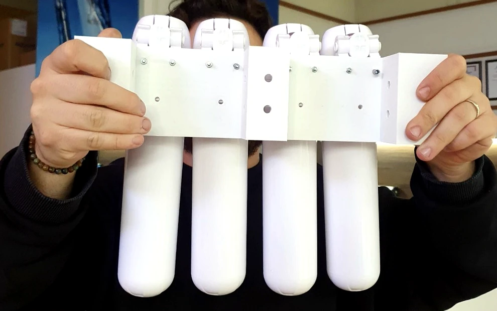
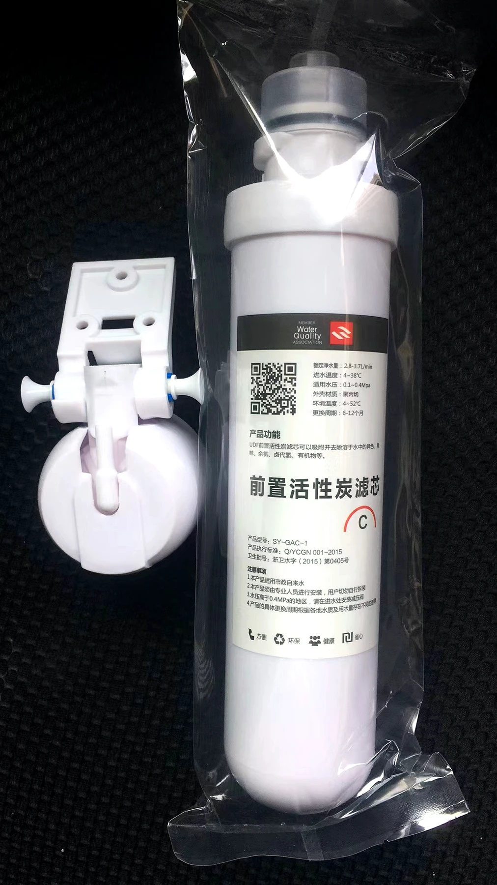
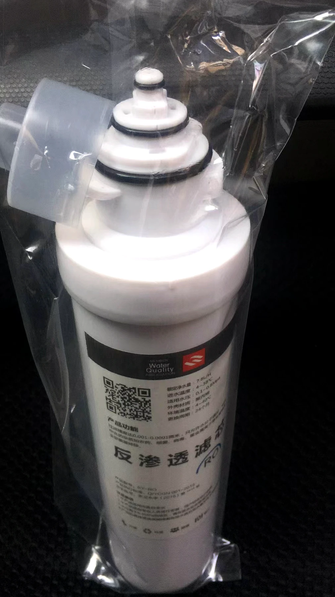
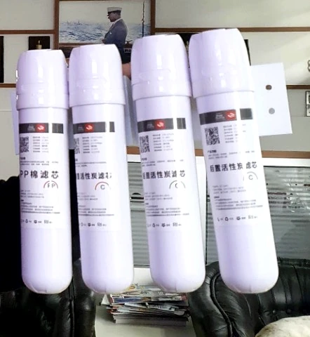
Brzozamjenjivi ulošci filtera za vodu · PP. PP — tehnički vodič za izbor. Prije zahtjeva za ponudu potvrdite priključak i zahtjeve projekta.
KontaktBrzozamjenjivi ulošci filtera za vodu · UDF. UDF — tehnički vodič za izbor. Prije zahtjeva za ponudu potvrdite priključak i zahtjeve projekta.
KontaktBrzozamjenjivi ulošci filtera za vodu · CTO. CTO / PCO — tehnički vodič za izbor. Prije zahtjeva za ponudu potvrdite priključak i zahtjeve projekta.
KontaktBrzozamjenjivi ulošci filtera za vodu · RO. Filterski uložak RO. Prije zahtjeva za ponudu potvrdite priključak i zahtjeve projekta.
KontaktBrzozamjenjivi ulošci filtera za vodu · T33. T33 — tehnički vodič za izbor. Prije zahtjeva za ponudu potvrdite priključak i zahtjeve projekta.
Kontakt